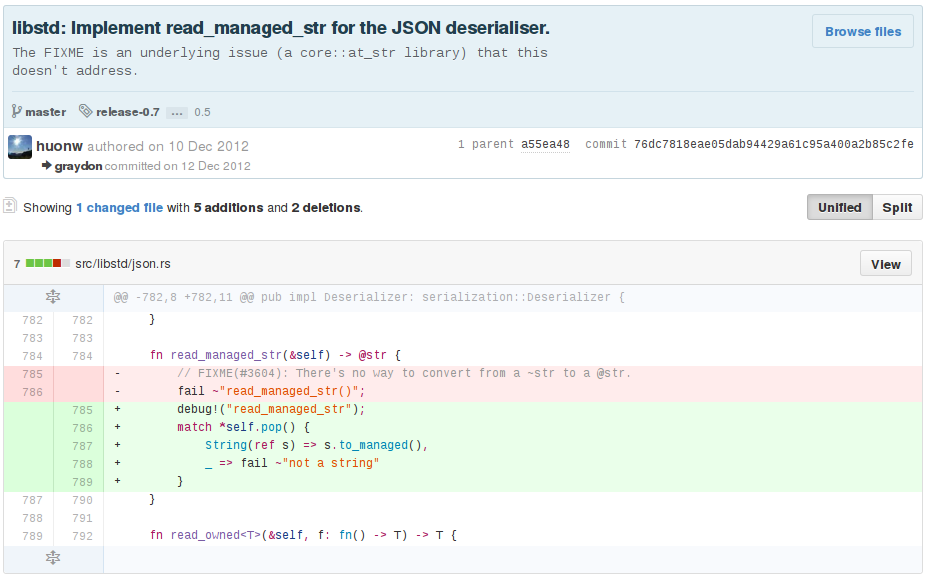

huonw.github.io/rust-sydney-feb15
I'm Huon Wilson, long-time Rust contributor: wrote a patch, got hooked... Somehow now organising a meetup.

Conduct of conduct, rust-lang.org/conduct.html. Summary:
- We are committed to providing a friendly, safe and welcoming environment for all.
- Please be kind and courteous. There's no need to be mean or rude.
- We will exclude you from interaction if you insult, demean or harass anyone. That is not welcome behaviour.
Open source (github.com/rust-lang/rust) programming language. Originally a personal project of Graydon Hoare, adopted by Mozilla Research in 2009.
1.0.0-alpha released a month ago, full stable release soon!
A haiku:
a systems language
pursuing the trifecta
safe, concurrent, fast
Control is critical, overhead minimal.
No garbage collection, no "runtime", use the OS directly where possible... write the OS too.
Memory safety is a priority, avoid GC with powerful static analysis:
Compiler uses annotations on pointers (etc.) to ensure they're always valid.
fn get_ten<'a>(map: &'a HashMap<i32, String>) -> &'a String { let val = &map[10]; val }
Rust provides tools to handle shared state and message passing safely, e.g.
Arc<String>, immutable shared memoryArc<Mutex<String>>, mutable shared memorychannel::<String>(), message passingNo data races: locking/atomicity enforced when required.
Possible to implement a general parallel_map in safe code (in the
near future: RFC 458), e.g. usable like:
// Eight integers on the stack let mut stack_buffer = [0; 8]; // add one to each, in parallel parallel_map(stack_buffer.iter_mut(), |item| { // item is a pointer into the main thread's stack *item += 1 }); println!("{:?}", &stack_buffer[]); // [1, 1, ..., 1];
Lifetimes, and the Send & Sync traits allow the compiler to guarantee safety.
Few runtime language features to stand in the way of the compiler. Standard libraries abstractions try to optimise well.
"Functional programming" iterators feel high-level:
pub fn sum(x: &[i32]) -> i32 { x.iter().fold(0, |a, b| a + *b) }
Vectorised by LLVM! (16 i32s per iteration.)
.LBB0_4:
vpaddd -48(%rdx), %xmm0, %xmm0
vpaddd -32(%rdx), %xmm1, %xmm1
vpaddd -16(%rdx), %xmm2, %xmm2
vpaddd (%rdx), %xmm3, %xmm3
addq $64, %rdx
addq $-16, %rdi
jne .LBB0_4